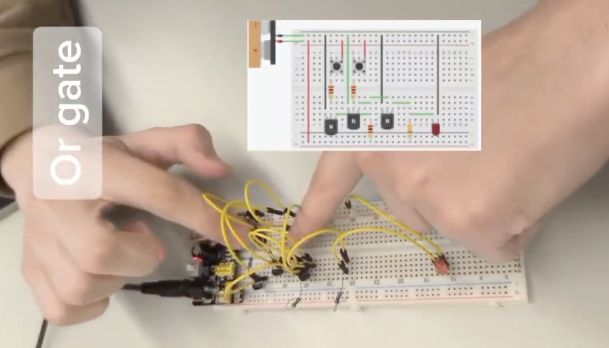
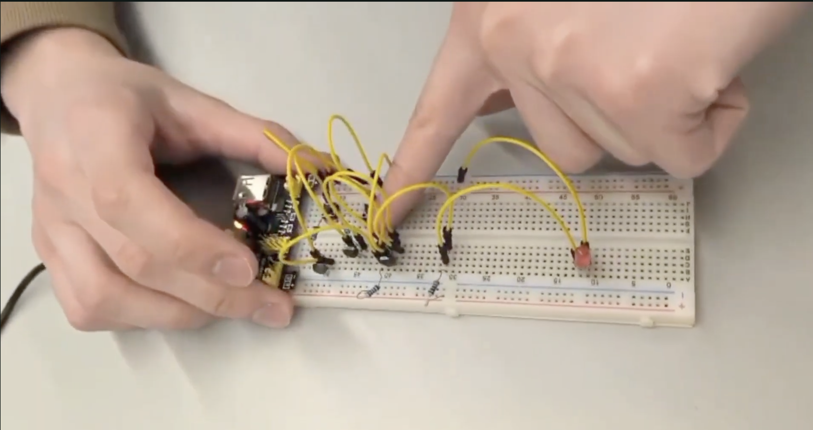
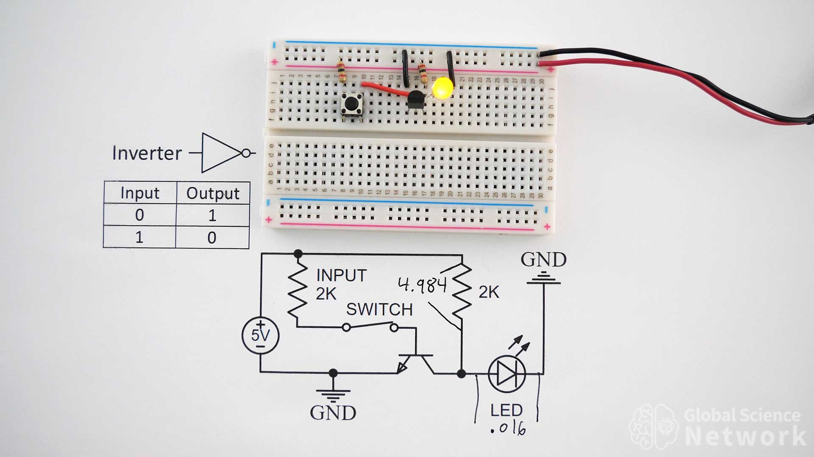
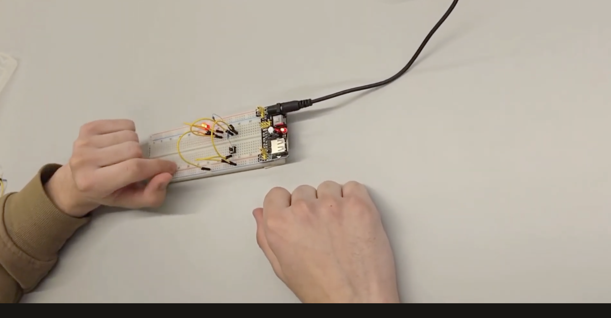
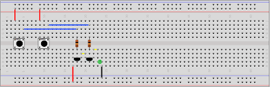
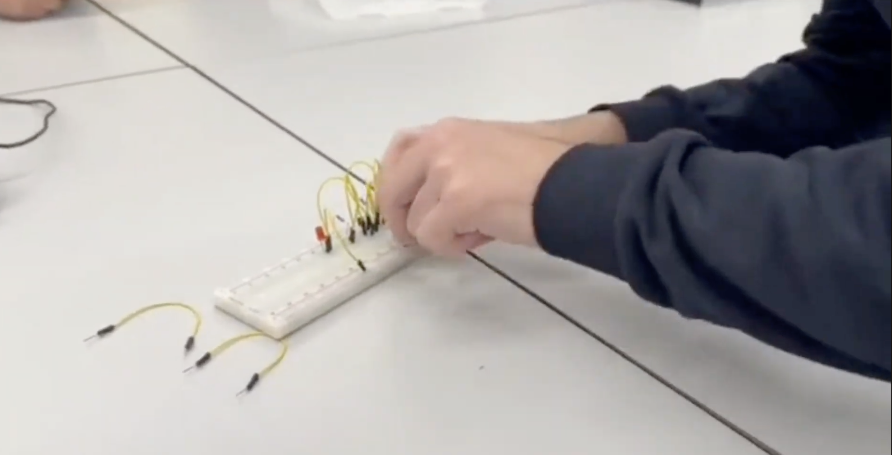
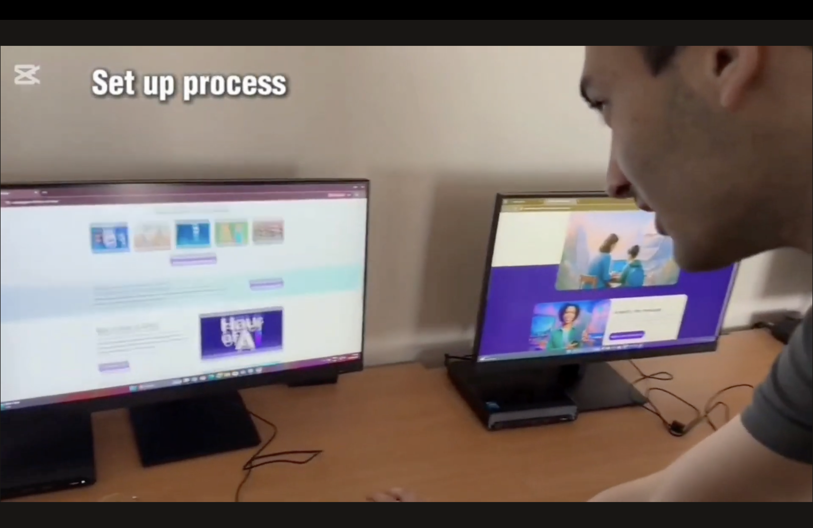
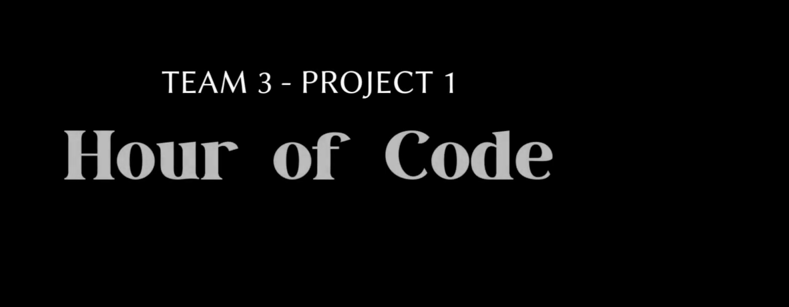

This page shows my course projects and activities. More project details will be
added as the portfolio develops.
Project 1: Digital Logic Gates on Breadboard
In this project, our team built and tested basic digital logic gates on a
breadboard. We worked with OR, NOT, and AND gate circuits using jumper wires,
resistors, buttons, transistors, LEDs, and a power module. The LED was used as
the output indicator, so we could see how each logic gate reacted to different
input combinations.
Team members: Faig, Huseyn, Elvin, Farhad
Skills practiced: digital logic, basic electronics, circuit
building, testing, teamwork

OR gate schema

OR gate test on breadboard

NOT gate schema

NOT gate test on breadboard

AND gate schema

AND gate test on breadboard
Project 2: Hour of Code Workshop (School No. 36, Sumgayit)
For this project, our team visited School No. 36 in Sumgayit and ran an Hour of
Code workshop for younger students. We started with a general introduction,
talked about ADA University, and checked how interested students were before we
began. Then we helped them get set up on the computers and worked through
beginner-friendly Scratch activities so they could practice simple algorithmic
thinking. At the end of the workshop, students received certificates for taking
part.
Workshop titleGeneral introductionIntroducing ADA UniversityMeasuring interest before the activity

Helping with setupScratch activities and algorithmic thinkingCertificates for participants

Workshop team
Project 3: EV3 Robot Movement and Turning
In this robotics project, our team worked with a LEGO Mindstorms EV3 robot. We
built the base frame, connected the motors and wheels, and checked that the
structure was solid before testing. The main goal was to understand how the
robot moves and turns in real life. We focused on movement along curves, arcs,
and semicircles, because robots usually turn using smoother curved paths instead
of very sharp turns.
Skills practiced: LEGO robotics, EV3 hardware, building and
testing, movement planning, teamwork